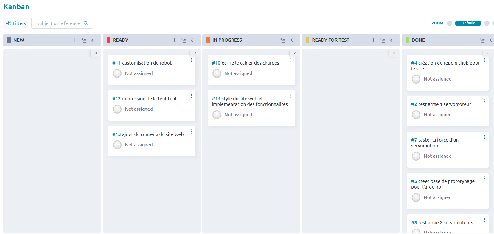

Origines du projet
Dans le cadre de notre formation Tremplin
Numérique, nous avons réalisé un projet autour d’Arduino :
concevoir un robot fonctionnel en UNE semaine, à partir de zéro.
Chaque équipe a tiré au sort un
thème et un duo de couleurs. Nous avons tiré au sort l’univers du Seigneur des Anneaux, avec
l’orange
et le bleu comme codes visuels.
L'objectif du robot qu'on a conçu est de soulever ses
adversaires à l’aide de plusieurs
mécanismes motorisés. On a décoré le robot avec une tête de Gollum
imprimée en 3D, avec une
tétine et un ruban pour le rendre plus mignon.
L’équipe 3.
Moodboard
Outils de gestion de projet
outil Kanban sur le site Taiga.io
Document technique
Problèmes rencontrés
- L'impression 3D de Gollum manquait de supports pour les oreilles.
- L'impression de la tétine qui était trop petite, et qui avait un filament qui n'adhérait pas à l'imprimante.
- Découpe de la boîte: les gravures pas très visibles et les fentes pour les servomoteurs légèrement trop petites. Deuxième découpe des pièces ratées avec les bonne dimensions.
- Le robot a la "tremble", soit un soucis programmation soit un soucis câblage.
- Les créneaux étaient trop serrés, on a limé pour que ça s'emboite plus facilement.
Matériel
- 28 cables dupont
- 3 servomoteurs
- 1 batterie externe
- 3 potentiomètres
- 10 wagos
- 1 arduino uno
- 1 petite breadboard
- 1 grande breadboard
Tâches réalisées lundi
Lundi, plusieurs tâches ont été accomplies dans le cadre du projet. Tout d'abord, le design du site internet a été réalisé en HTML et CSS en utilisant le framework Bootstrap, ce qui a permis de créer une interface moderne et responsive. Le site a ensuite été hébergé sur GitHub afin d’en faciliter l’accès et le suivi collaboratif. Parallèlement, le design du robot a été étudié et prototypé, permettant de définir les premières bases de sa structure et de son fonctionnement. Enfin, un cahier des charges détaillé a été rédigé, regroupant les objectifs, les contraintes techniques, ainsi que les besoins fonctionnels du projet.
Tâches réalisées le mardi
Mardi, les efforts se sont concentrés sur plusieurs aspects du projet. Le design du Gollum a été réalisé en vue de son impression en 3D, avec une attention particulière portée aux détails pour garantir un rendu fidèle. Le travail sur le site internet s’est poursuivi, affinant son apparence et son ergonomie. En parallèle, des fichiers SVG ont été créés pour représenter les armes ainsi que la structure du robot, facilitant leur intégration future. Enfin, un topo dynamique et percutant a été présenté pour faire un point clair et motivant sur l’avancement du projet.
Tâches réalisées le mercredi
Mercredi a marqué une étape importante dans l'avancement du projet. L’impression 3D du Gollum a été entièrement finalisée, avec un résultat fidèle au design prévu. La découpe de la structure du robot a également été réalisée, bien que les gravures soient peu visibles, nécessitant peut-être un ajustement des paramètres de gravure. Le câblage des composants a été effectué, mais un problème de tremblement est apparu au niveau des servomoteurs, ce qui demandera une vérification technique. Enfin, le développement du site web s’est poursuivi, avançant vers une version de plus en plus complète et fonctionnelle.
Tâches réalisées le jeudi
Jeudi a été consacré à la finalisation et à l’assemblage des différents éléments du projet. Les réglages du câblage et les ajustements du programme Arduino ont permis d’améliorer la stabilité et le bon fonctionnement du robot. Ce dernier a ensuite été assemblé, prenant enfin sa forme définitive. En parallèle, le site web a été peaufiné, avec des améliorations visuelles et structurelles. Pour une touche plus esthétique, le robot a été décoré, et une boîte dédiée aux commandes a été conçue, apportant à la fois ergonomie et organisation.
Matériel utilisé pour la conception du robot
Le robot a été conçu à l’aide de composants simples et efficaces. Il intègre 28 câbles Dupont pour les connexions, 3 servomoteurs pour les mouvements, et une batterie externe pour l’alimentation. Le contrôle analogique est assuré par 3 potentiomètres, tandis que 10 wagos facilitent les branchements. Une carte Arduino Uno pilote l’ensemble, avec une petite et une grande breadboard pour le montage et les tests des circuits. Sa structure a été réalisée en bois avec une découpeuse laser.